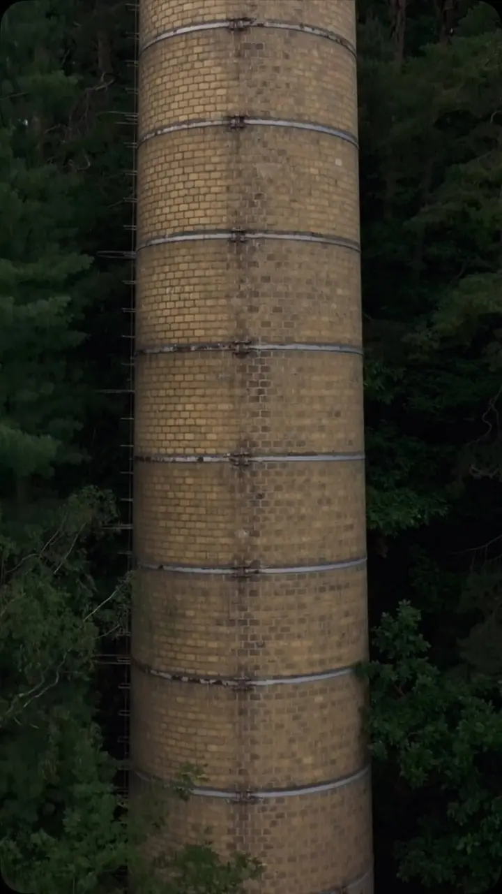
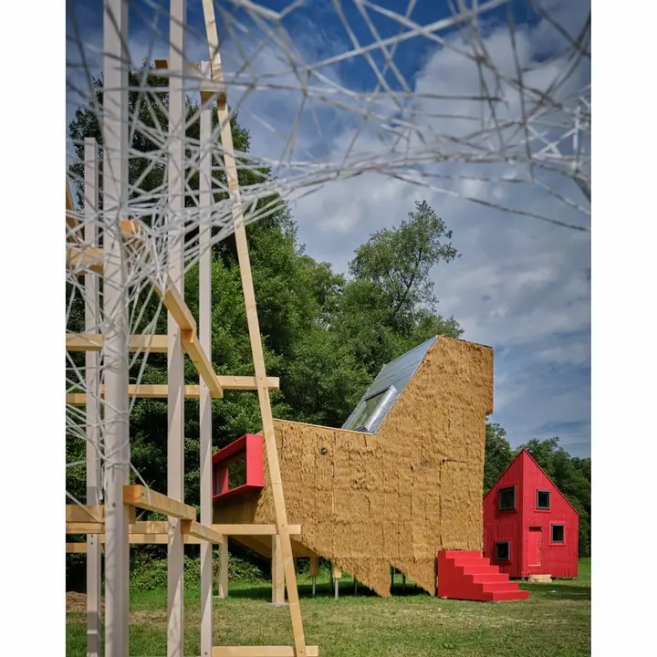
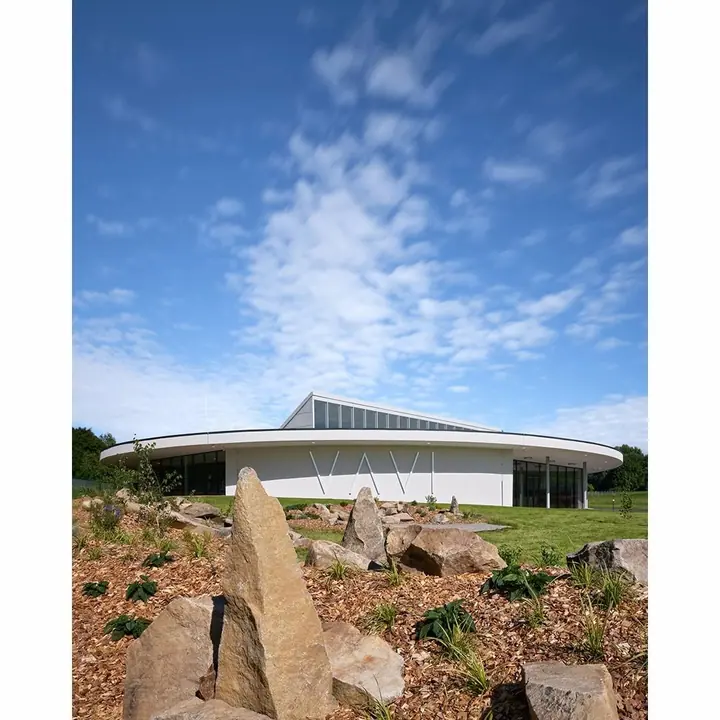
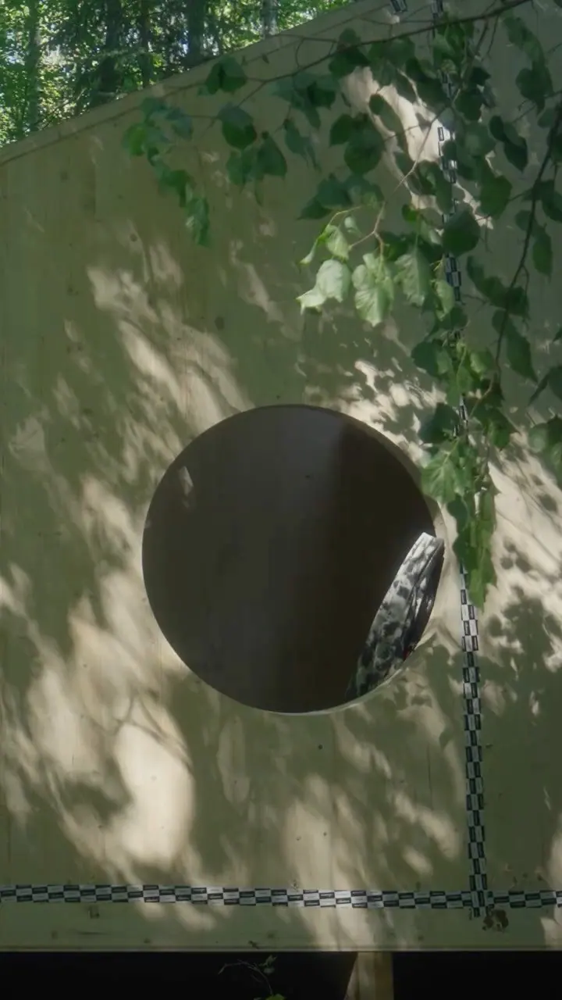
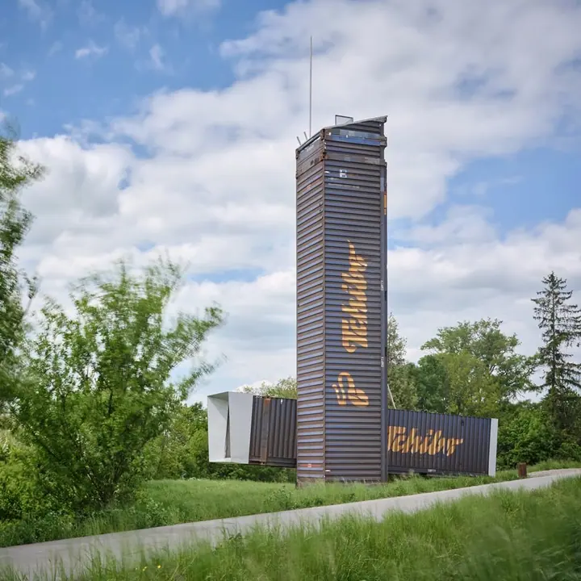
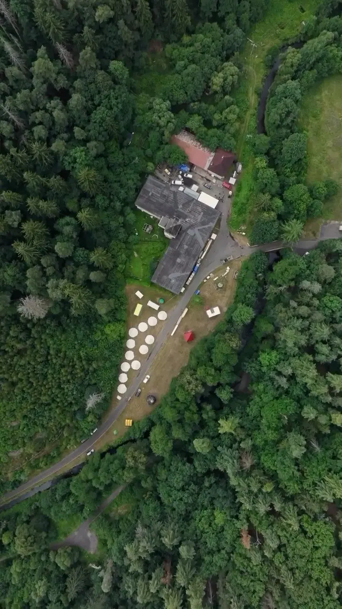
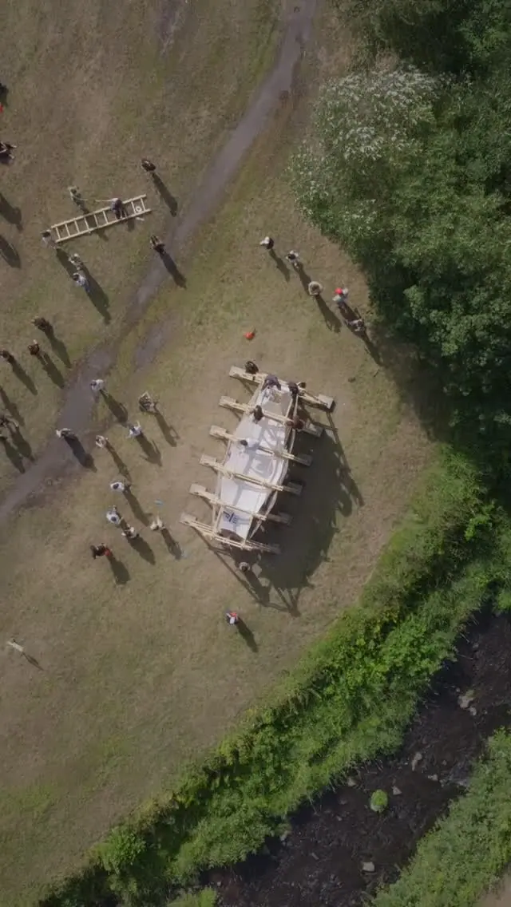
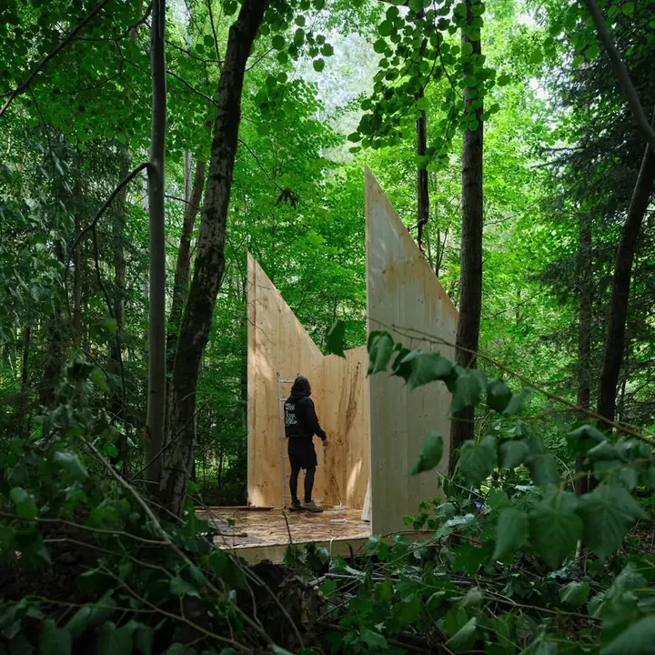
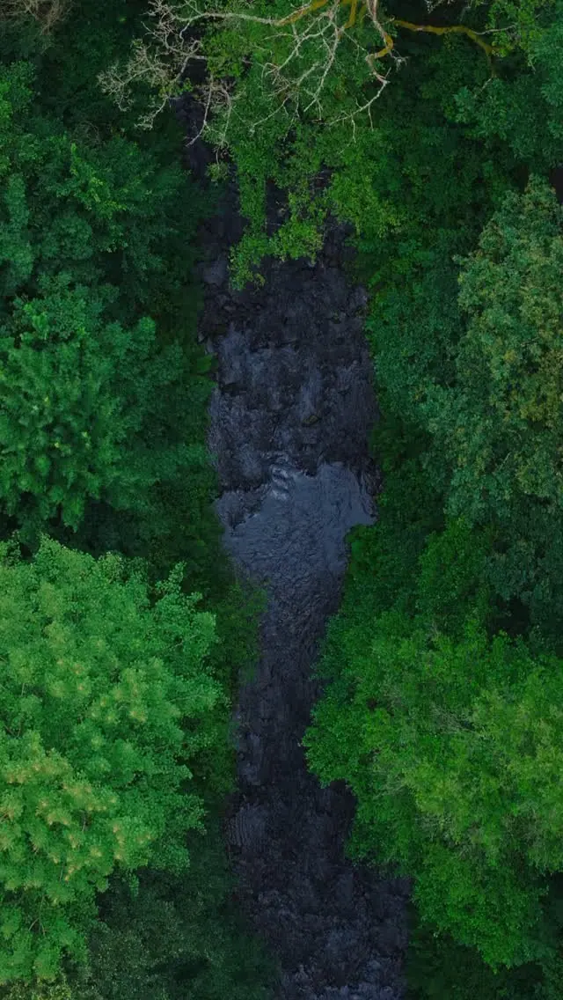
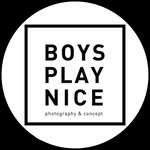

01 / 02
Fotografie architektury
Rodinné domy, firemní sídla i stavby v krajině. Hledáme nenásilnou a srozumitelnou formu, jak ukázat, čím je dílo jedinečné.
Zeptat se na termín→








Fotografie architektury bez zbytečných gest
Zeptat se na termín →(01) Ahoj
Jmenujeme se Jakub Skokan a Martin Tůma a pod značkou BoysPlayNice fotografujeme architekturu a design. Hledáme klidné a srozumitelné způsoby, jak ukázat, čím je stavba jedinečná, ať stojí ve městě, nebo uprostřed lesa .
20 100lidí sleduje mou práci na Instagramu
535příspěvků s fotkami a příběhy
(02) Co fotím
01 / 02
Rodinné domy, firemní sídla i stavby v krajině. Hledáme nenásilnou a srozumitelnou formu, jak ukázat, čím je dílo jedinečné.
Zeptat se na termín→Dále nabízím
Fotografujeme design a interiéry tak, aby vynikl materiál, světlo a vztah k prostoru. Druhá stálá část naší práce vedle architektury.
↗(04) Postup
Od první zprávy po hotovou galerii.
Krok 1 z 4
Pošlete nám pár slov o stavbě nebo projektu, kde stojí a k čemu fotky potřebujete. Ozveme se s návrhem dalšího postupu.
Krok 2 z 4
Projdeme si s vámi podklady, záměr architekta a světlo na místě, abychom věděli, v jakých atmosférách má smysl stavbu ukázat.
Krok 3 z 4
Fotíme stavbu v denním světle i ve večerních hodinách, včetně detailů a okolí, které jí dávají měřítko.
Krok 4 z 4
Vybereme a upravíme ucelený soubor fotografií, který je připravený na web, do portfolia i do médií.
Architektura jako přirozená součást života
(05) Za objektivem
Jsme fotografická dvojice a společně se věnujeme fotografii architektury a designu. Dlouhá zkušenost s focením staveb nás vede k hledání nenásilných a srozumitelných forem, které přesto dokážou zaujmout a předat, v čem je dané dílo výjimečné.
Pořád se vracíme k tomu, jak spolu souvisí architektura a fotografie, a rádi propojujeme různé fotografické žánry. Reagujeme na přírodní i městské prostředí, na vznešenost forem, průmyslovou užitnost i na líbivost a srozumitelnost popu. Prověřujeme hodnoty a experimentujeme.
Stavbu často sledujeme v několika atmosférách: v čistém denním světle, ve vztahu k zahradě i ve večerním nasvícení. Fotili jsme třeba rodinný dům v Čakovicích od studia edit! nebo sídlo firmy Lasvit v Novém Boru pro Wallpaper Magazine. Sídlíme v Česku, ale za projekty jezdíme kamkoli a jsme ambasadory Fujifilm CZ a Volvista.cz.

Jakub
Jakub Skokan a Martin Tůma · Fotografové architektury a designu
Ano. Sídlíme v Česku, ale za projekty jezdíme kamkoli na světě.
Především architekturu, tedy rodinné domy, firemní sídla a stavby v krajině, a k tomu design a interiéry.
Ano, stavby rádi ukazujeme v několika atmosférách, od denního světla po večerní nasvícení.
Rozsah, cenu i termín dodání domlouváme podle konkrétního projektu. Napište nám a připravíme nabídku.
(07) Kontakt
Napište pár vět o tom, co si představujete, a termín, který se vám hodí.
info@boysplaynice.com